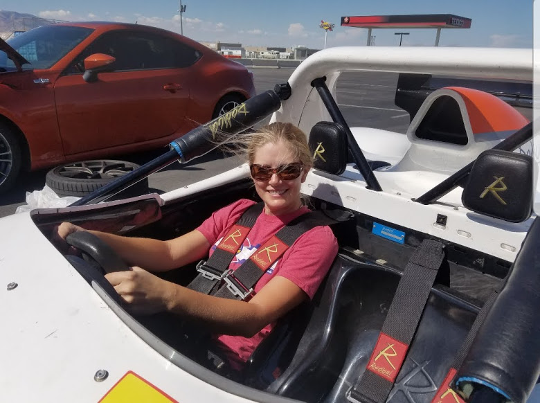

About Me
 Denise Stark lives in the Denver area with her son, husband, and her Great Pyrenees mix. Having earned a college degree in Earth Sciences at the University of Northern Colorado, she ultimately branched out and built a career in the banking industry before departing from that career 5 years ago to dedicate more time to raising her son and buying groceries for her husband. With a desire to exercise her mental faculties, the analytical problem solving challenges of software development make it an ideal place for her to etch out a new career.
Denise will graduate from Denver University's first all-woman coding bootcamp in the Spring of 2019 and hit the ground running in Denver's amazing tech-centric landscape.
As a well-rounded individual, she is also an enthusiastic cyclist and snowboarder while also being a strong proponent of biker safety laws, loves the mountains, and enjoys taking her dog for walks.